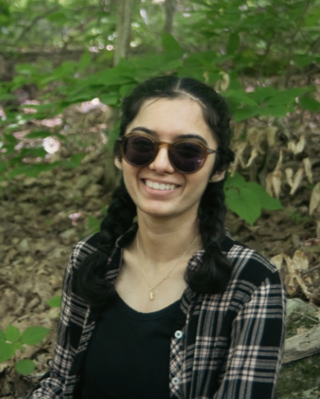
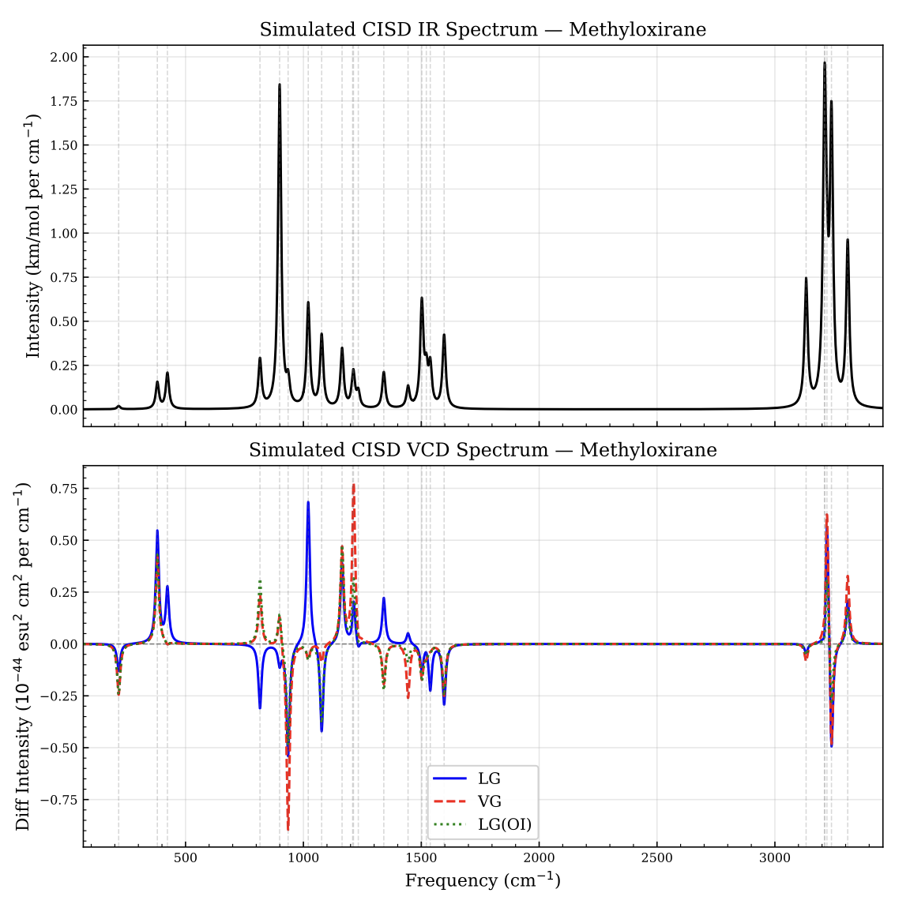
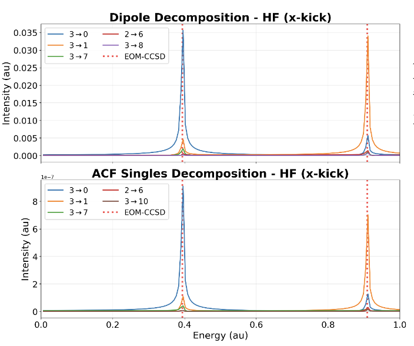
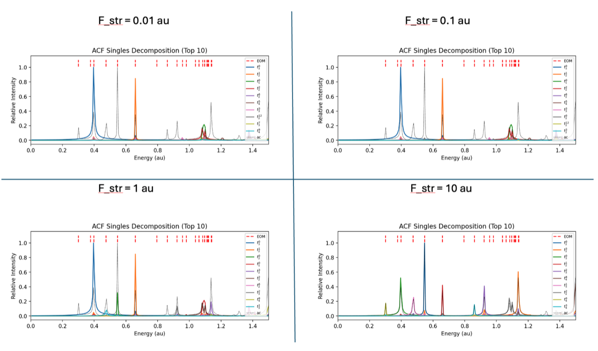
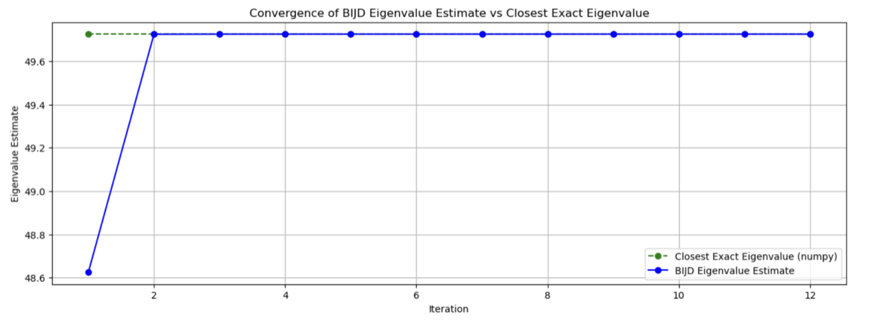
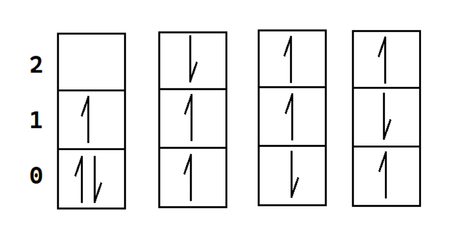
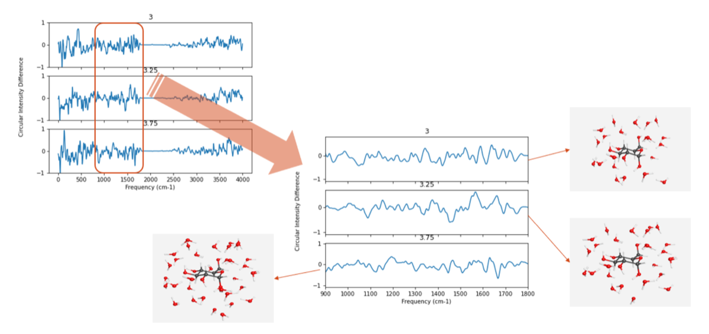

Most people either derive equations or write code. I do both, and I think that's the only way to do either one well. I build quantum chemistry software from mathematical first principles: proving theorems, then turning them into validated implementations that run on real molecules.

There's a rare kind of researcher who can sit with a page of quantum mechanical equations in the morning and have working, validated code by evening. I've spent the last three years becoming that person, in the Crawford Group at Virginia Tech.
I work on the computational chemistry of chiral molecules, molecules that come in mirror-image pairs, like your left and right hands. The shape of that mirror image determines whether a drug works or harms. I build high-accuracy software that predicts how these molecules interact with light, starting from mathematical first principles: deriving equations, proving they simplify in key ways, implementing them, and validating the result to one part in ten million.
In parallel, I tackled interpretability: when you simulate how a molecule absorbs light, you get accurate peaks but no explanation. I built a method that traces every peak back to the specific electron transitions causing it.
What excites me next: scaling these methods to larger molecules using GPU architectures, making high-accuracy quantum chemistry fast enough to matter at the scale of real drug discovery.






secondquant module to apply Wick's theorem symbolically, perform BCH expansion to 4th order, and generate np.einsum code for energy and amplitude equations of dual-exponent CC theory involving scattering-type operators.I work primarily in Python and C++, with a strong preference for code that is readable, rigorously validated, and fast enough to be useful on real research problems. Most of my scientific work is built on NumPy/SciPy with heavy use of tensor contraction routines, SymPy for symbolic equation derivation, and HDF5 for large trajectory data. I run production jobs on Virginia Tech's ARC cluster via SLURM and regularly use Psi4 and Gaussian 16 for reference calculations. On the quantum computing side I'm working through error correction (Google QAI course) and have hands-on experience with Qiskit, Cirq, and QDK.
I'm looking for PhD internships and research collaborations starting Summer 2027, particularly in high-accuracy computational chemistry, quantum simulation, or scientific software at scale. If you're working on problems where the math and the code both have to be exactly right, I'd genuinely like to talk.